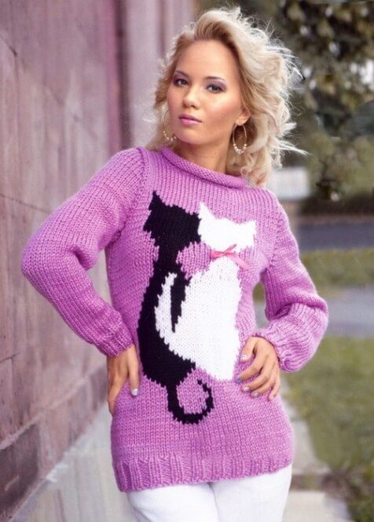

Пряжа adelia "rada"

★ цвет на фото может незначительно отличаться
Описание товара
Эта пряжа представляет собой объемную блестящую нить. Используется для вязания моделей верхней одежды с рельефными узорами. Косы, жгуты, аранские орнаменты, связанные из этой пряжи, будут прекрасно переносить чистку и ручную стирку, а изделие надолго сохранит фактуру.
Изделия из этой пряжи легко и быстро вяжутся, поэтому подходят для начинающих вязальщиц.
купитьПодробное описание товара
- Акрил является самым мягким и шелковистым из синтетических волокон. Пряжа из акрила хорошо держит тепло, превосходя в этом даже натуральную шерсть.
- Изделия из акрила практически не мнутся и не усаживаются. Акрил подвержен пиллингованию, но образующиеся катышки очень быстро исчезают в процессе носки.
- Пряжа из этого материала прочно и глубоко прокрашивается, что обеспечивает чистый и насыщенный цвет.
Характеристики товара
| Артикул: | "RADA" |
| Вес, г: | 100 |
| Длина нити,м | 80 |
| Марка: | "Adelia" |
| Объем единицы продажи, л: |
.84 |
| Состав: | 100% акрил |
| Пряжа подходит для машинного вязания | |
- Страна происхождения: Китай
- Тип окраски: однотонная
- Тип пряжи: классическая
- Тип товара: пряжа
- Толщина нити: толстая
- Цвет: розовая
- Сезон: демисезон, зима
Советы по использованию
Рекомендуемый диаметр спиц для пряжи 4.0 - 6.0 мм.
На вязаном изделии размером 10×10 см получается 17 рядов по 13 петель.
На этикетке каждого мотка указывается номер партии/Lot. При покупке пряжи для одного изделия рекомендуется использовать один и тот же номер «lot», так как каждая партия может незначительно отличаться по оттенку.
Обращаем Ваше внимание, что во всех видах пряжи adelia состав, указанный на этикетке, соответствует реальному.
Уход за готовым изделием: ручная стирка t-40, не гладить, щадящий режим химчистки, не отбеливать, не сушить в барабанной сушилке.
Творчество наших покупателей
Пуловер с котиками выполнен из пряжи розового цвета Adelia “rada ”(100% акрил 80 м/100г)